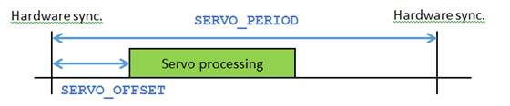

System Parameter (MC_CONFIG only)
This parameter is a low-level scheduling parameter to allow fine tuning of when the cyclic servo activities start executing within the firmware in relation to the synchronization pulse received from controller FPGA.
Modification to the default settings of this parameter may be required for certain systems that require more time for data to be collected from relatively slow serial encoders for example.
SERVO_OFFSET is an MC_CONFIG parameter, if an entry does not exist within the MC_CONFIG file then default settings will be used depending upon the selected SERVO_PERIOD but is approximately 25% of this time period. The accepted range of values is from 0 to 75% of SERVO_PERIOD.

SERVO_OFFSET timing diagram
SERVO_OFFSET has recommended values when used in the MC464 with a P871 RTEX module. Set the value according to the table below. MC464 firmware 2.0205 or later.
|
SERVO_PERIOD |
Default SERVO_OFFSET |
Max Axes at default |
Recommended SERVO_OFFSET |
Axes range at set value |
|
500 |
150 |
10 |
0 |
11 - 16 |
|
1000 |
240 |
28 |
0 |
29 - 32 |
When the MC464 has mixed modules, e.g. P874/P879 and P871, the Flexaxis modules need the default SERVO_OFFSET value.
If using firmware V2.0204 or lower, the axes count will be lower. Contact Trio for advice.
Using the default values, the max number of axes shown below assumes the minimum data in the telegram to each drive and that no additional processing is being done. For example, enabling the Kinematics will reduce the number of axes that can be run. By reducing the value of SERVO_OFFSET, the processing of more axes may be possible.
|
SERVO_PERIOD |
Default SERVO_OFFSET |
Max Axes at default |
Recommended SERVO_OFFSET |
Axes range at set value |
|
500 |
150 |
8 |
70 |
9 - 12 |
|
1000 |
240 |
16 |
140 |
17 - 28 |
|
2000 |
500 |
32 |
240 |
32 |
When the MC4N encoder port is used in Absolute mode, e.g. SSI or EnDat, the default SERVO_OFFSET value must be used.
The axes count is only to show what may be possible. When additional information is passed in the cyclic data, for example Touch Probe and Digital/Analogue I/O, the maximum axes count will decrease.
SERVO_OFFSET is specified in microseconds.
Set the SERVO_OFFSET in MC_CONFIG for the MC464 with more than 28 axes of Panasonic RTEX drives connected to a P871 RTEX module.
'MC_CONFIG script file
SERVO_PERIOD = 1000
SERVO_OFFSET = 0
Set the SERVO_PERIOD and SERVO_OFFSET in MC_CONFIG for the MC4N-ECAT with 18 axes and Kinematic transforms enabled.
'MC_CONFIG script file
SERVO_PERIOD = 1000 'Servo period of 1000 us (1 kHz)
SERVO_OFFSET = 140 'Servo data activity set to 140 us after the hardware sync.